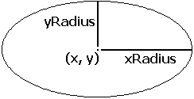

| Draw.FillOval |
| Syntax | Draw.FillOval (x, y, xRadius, yRadius, Color : int)
|
| Description | The Draw.FillOval procedure is used to draw a filled oval whose center is at (x, y). The horizontal and vertical distances from the center to the oval are given by xRadius and yRadius. To get an oval outlined in a different color, use Draw.FillOval with the Color parameter set to the fill color and then call Draw.Oval with the Color parameter set to the border color.
 |
| Example | This program draws a large filled oval that just touches each edge of the screen using color number 1. The maxx and maxy functions are used to determine the maximum x and y values on the screen. The center of the oval is at (midx, midy), which is the middle of the screen.
View.Set ("graphics")
const midx := maxx div 2
const midy := maxy div 2
Draw.FillOval (midx, midy, midx, midy, 1)
|
| Execute | |
| Details | Ideally, a circle is drawn when xRadius = yRadius. The screen must be in a "graphics" mode. See the View.Set procedure for details. If the screen is not in a "graphics" mode, am error will occur.
|
| Status | Exported qualified. This means that you can only call the function by calling Draw.FillOval, not by calling FillOval.
|
| See also | View.Set, maxx, maxy and the various procedures in the Draw unit.
|